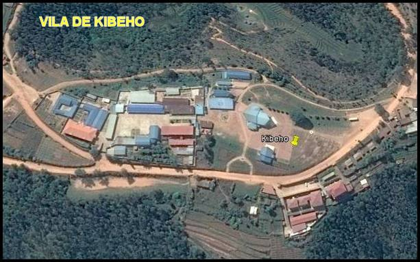
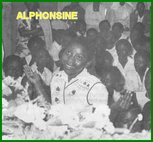
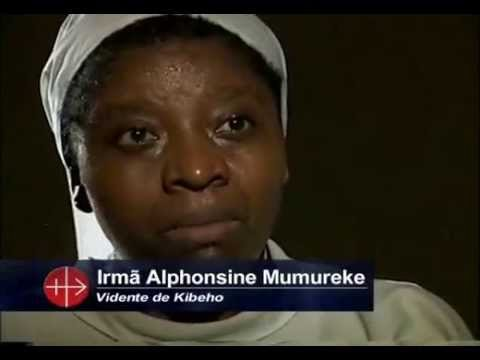
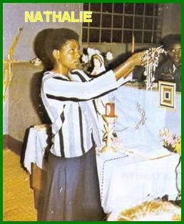

“A MÃE DE DEUS VISITA A ÁFRICA”
LOCALIZAÇÃO
Kibeho é um
povoado que pertence a arquidiocese de Butare, segunda maior cidade de Ruanda,
na África. A capital Ruandesa é Kigali e fica aproximadamente a 
ESPÍRITO DA COMUNIDADE
Naquela região, sempre o que causava muitas preocupações era a existência de uma abominável divisão política e étnica, que por qualquer motivo servia de estopim para acirrar e aprofundar as diferenças de opiniões, oferecendo margem à insensatez e antipatias, gerando um abominável campo de discórdia, manifestada através de brigas e agressões. Também o vandalismo era avassalador por todo o país entre anos 1980 e 1981. Quase todas as imagens da VIRGEM MARIA, que estavam na entrada das aldeias, foram mutiladas, destruídas ou roubadas. Esta foi uma época muito triste, quando a SANTÍSSIMA MÃE DE DEUS estava quase esquecida, e as pessoas de um modo geral não rezavam mais. Mesmo muitos sacerdotes já não queriam rezar o Rosário, influenciados pela propaganda de falsos teólogos, que pregavam fazendo todos acreditarem que o Rosário era uma devoção ultrapassada. Os católicos eram humilhados; o clero começava a desistir. Foi precisamente neste momento de desânimo que NOSSA SENHORA escolheu para visitar Ruanda. E assim, aconteceu uma verdadeira e eficiente transformação, desde 1981 até 1989, quando então o país ouviu falar da VIRGEM MARIA com notável frequência, como nunca se ouvira antes.
AS APARIÇÕES
NOSSA SENHORA, sempre preocupada em restabelecer a harmonia e a paz em todo o mundo, apareceu a três jovens em Kibeho, com a intenção de incentivar e sensibilizar o povo a rezar com fé e vontade, afastando aquelas loucas idéias de que o Rosário estava ultrapassado, e, sobretudo, suplicando fervorosamente ao SEU FILHO JESUS a fim de alcançar para o povo ruandês a tão desejada paz.
Por outro lado, as Aparições da SANTÍSSIMA VIRGEM MARIA em Kibeho (desde o dia 28 de novembro de 1981 até 28 de novembro de 1989) foram às primeiras que ocorreram em solo africano, convergindo à atenção do mundo cristão para a África. E como procedimento normal, a Igreja cercou-se dos naturais cuidados, elaborando um profundo e rigoroso esquema de investigação dos acontecimentos, através de um longo processo canônico, possibilitando atestar a perfeita autenticidade das Aparições da MÃE DE DEUS, em Kibeho.
PRIMEIRA APARIÇÃO DE NOSSA SENHORA

“Eu estava na Sala de Refeições da Escola, servindo o almoço as minhas colegas, quando de repente ouvi uma voz me chamando. Olhei para os lados e não identifiquei quem era... A voz me chamou outra vez! Percebi que vinha do corredor. Era uma voz suave e agradável... Então fui para o corredor ver quem me chamava... Era uma linda Senhora, muito bonita mesmo, que me recebeu carinhosamente”.
A VIRGEM MARIA: “Minha filha”...
Alphonsine: “Ajoelhei e fiz o sinal da Cruz e perguntei: Quem é a Senhora?”
A VIRGEM MARIA respondeu: “EU SOU A MÃE DO VERBO.”
Alphonsine num gesto atencioso, cheia de admiração, disse: “Eu amo DEUS e SUA MÃE que nos deu o MENINO JESUS que nos redimiu.”
VIRGEM MARIA: “EU vim para te acalmar, porque ouvi as tuas preces. EU gostaria que os teus amigos tivessem Fé, porque eles não acreditam com convicção”.
Alphonsine: “A MÃE DO SALVADOR! Que maravilha! Se sois realmente VÓS que nos veio dizer isso, nós temos mesmo pouca FÉ. E também é prova que VÓS nos amais. Estou realmente cheia de alegria com a VOSSA Aparição”.
Depois Alphonsine relatou para todos, como a VIRGEM SE apresentou:“A VIRGEM não era branca, como se apresenta nas imagens sagradas. Eu não consigo determinar a cor da pele, mas ELA é de uma beleza incomparável. Estava descalço e tinha um vestido branco sem costura, e também, um véu branco na cabeça. SUAS Mãos estavam entrelaçadas sobre o peito, e seus dedos apontados para o Céu. Depois que a SENHORA se despediu, voltei para a sala de refeições e meus colegas me disseram que eu estava falando em diversos idiomas: Francês, Inglês, Kinyarwanda, etc.”
Na continuidade, Alphonsine disse: “Quando a VIRGEM estava prestes a partir, eu rezei três AVE-MARIA e a oração, VEM ESPÍRITO SANTO. Então ELA partiu e eu vi a SUA ascensão aos Céus como li que foi JESUS.”
Terminada a Aparição Alphonsine permaneceu ajoelhada imóvel durante 15 minutos aproximadamente, como se estivesse paralisada. As pessoas vieram e todos os esforços foram feitos para tirá-la do êxtase, mas foram em vão. Nem os professores, nem as freiras acreditaram no que Alphonsine disse. Inclusive imaginaram que ela estivesse doente e delirando.
NOSSA SENHORA voltou a aparecer no dia seguinte, 29 de Novembro de 1981. E durante o mês de Dezembro a MÃE DE DEUS apareceu em quase todos os sábados. Excitados pela curiosidade, as alunas e as professoras fizeram diversos testes para comprovar a realidade dos êxtases. Quando a jovem Alphonsine estava ajoelhada em estado de êxtase conversando com NOSSA SENHORA, eles queimavam a menina com um fósforo, ou picavam o seu braço e a sua perna com um alfinete, para ver as reações dela. Mas a vidente não sentia nada, não tinha a menor reação. E na verdade, muitas das suas colegas não acreditaram nas Aparições e por isso zombavam: “Aí vem à vidente”.
Durante a Aparição do dia 8 de Maio de 1982, Alphonsine se queixou à VIRGEM MARIA, dizendo: “As pessoas dizem que sou louca...” NOSSA SENHORA ouviu, mas permaneceu séria em silêncio. Nesse dia sua mãe estava presente pela primeira vez.
Em virtude da descrença sobre as Aparições, Alphonsine pediu a NOSSA SENHORA que também aparecesse a outras colegas da Escola. A VIRGEM MARIA considerou o pedido dela e atendeu. A MÃE DE DEUS começou a aparecer também para duas outras moças colegas de Alphonsine: Nathalie e Marie Claire.
HIPOCRISIA
Paralelamente a estas duas videntes escolhidas por NOSSA SENHORA, atendendo a solicitação de Alphonsine, surgiram outras videntes que eram falsas, e não estudava na mesma Escola. Evidentemente com intenções maléficas e perturbadoras, se proliferaram de forma preocupante, numa clara manifestação diabólica para desacreditar as verdadeiras Aparições da VIRGEM SANTÍSSIMA. Chegaram a ser relacionadas 33 moças que se diziam ser videntes, que recebiam aparições da VIRGEM MARIA, mas que não era verdade. E por isso mesmo, acabaram por serem desacreditadas, ensejando as autoridades religiosas agir no direito e na justiça contra as próprias mentiras delas.
UMA OBSERVAÇÃO INTERESSANTE
Um fato curioso também foi observado nas Aparições da MÃE DE DEUS, praticamente as videntes escolhidas não permaneciam em total êxtase. Elas tinham êxito sim em determinados momentos e depois se recuperavam. E também, as três videntes tinham Aparições individuais, uma de cada vez, enquanto as outras duas ficavam assistindo em companhia da multidão presente. Havia canções, orações de intercessão, bênçãos com aspersão de água, e em certos dias, as quedas devidas ao estado de êxtase aconteciam, quedas repetidas da vidente em êxtase. As Aparições variavam de duração, dependendo da frequência de pessoas. Todavia no final de cada Aparição, cada jovem vidente tinha fortes quedas estática. A Quaresma de 1983 foi caracterizada especialmente por um jejum das videntes e do povo cristão que queria participar. E por isso mesmo o jejum em conjunto, foi acompanhado de perto por uma equipe de médicos da Universidade Nacional do Ruanda.
EXPERIÊNCIA MÍSTICA
Alphonsine Mumureke disse ter
feito nos dias 20 e 21 de Março de 1982 uma
“viagem mística” de várias horas em companhia da
VIRGEM MARIA a outro mundo, 
Antes da experiência, ela informou a Irmã Diretora e as suas colegas com antecedência: “Vou parecer morta, mas não tenham medo; não me enterrem!” (A jovem deixou claro. Que era o seu espírito quem faria a viagem com a VIRGEM).
A viagem durou dezoito horas. Sacerdotes, Enfermeiros, Religiosos, e o Assistente Médico da Cruz Vermelha, estavam presentes e viram Alfonsine mergulhada num profundo sono, com o corpo hirto, retesado, imóvel e muito pesado. Eles não conseguiram levantá-la e nem separar as mãos que estavam unidas.
SEMELHANTE EXPERIÊNCIA
Nathalie Mukamazimpaka teve também uma experiência semelhante em 30 de Outubro de 1982, que foi observada de perto por uma equipe da Comissão Teológica do senhor Bispo.
DURANTE AS APARIÇÕES
As pessoas perguntavam as meninas videntes o que viam durante os êxtases nas Aparições? Todas descreveram a mesma situação:“Uma imensa área de campinas verdejantes, coberta por orvalho cintilante. Um céu com suaves luzes coloridas. Lindas flores viçosas cobrindo tudo e a SANTÍSSIMA VIRGEM MARIA pairando no ar acima de nós”.
Com o passar dos dias as noticias sobre os fatos testemunhados correu ligeira, e espalhou-se por todo o país. Logo, multidões de devotos, romeiros e curiosos afluíram a Kibeho.
A rádio Ruandesa chegou a instalar um posto de transmissão diretamente do local; inclusive com alto-falantes, para descrever o que acontecia e também para divulgar as mensagens recebidas.
Padres, Irmãs Religiosas, autoridades civis e militares, além dos muitos romeiros, testemunharam os milagres solares que aconteceram diversas vezes: “O sol se deslocava para os lados e também na vertical; surgiam na superfície solar listras vermelhas e brancas, que depois ficavam azuladas, sendo possível observá-las por longos minutos a olho nu. O céu sobre o povoado ficava pintado por raios multicoloridos. Também á noite as estrelas se moviam rapidamente, como se dançassem, e depois desapareciam; no lugar delas surgiam cruzes luminosas”.
MILAGRE DA MÃE DE DEUS

- "Porque não ME pediram chuva?”
Nathalie respondeu:
- A SENHORA disse que faria chover na oportunidade certa...
NOSSA SENHORA então disse:
- “Agora vou lhes dar uma chuva benéfica!”
Pouco tempo depois choveu torrencialmente em toda aquela região, e milhares de pessoas presentes caíram de joelhos agradecendo e louvando a DEUS por tão grande graça. Isto, primordialmente porque no mês de Agosto era difícil chover. A água tão inesperada foi armazenada e o povo a utilizou por muito tempo.
DESEJO DE NOSSA MÃE SANTÍSSIMA
O grande objetivo da MÃE DE DEUS era recordar o Evangelho para o povo, pois as pessoas estavam vivendo esquecidas das palavras e ensinamentos de JESUS, tão claras e explícitas nas Sagradas Escrituras. Principalmente o conteúdo da Vida, Paixão e Morte de JESUS o FILHO DE DEUS. Por isso mesmo, a SANTÍSSIMA VIRGEM MARIA pediu que o povo fizesse penitência, sacrifícios e cultivassem o jejum em benefício de todos, como maneira eficiente de alcançar consolo para as pessoas com terríveis sofrimentos.
ELA disse: “PORQUE O MUNDO ESTÁ MAL... EU quero vos colocar de pé, mas vós não ME ouvis...”